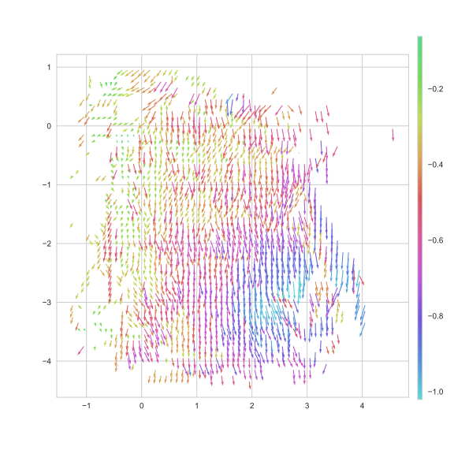
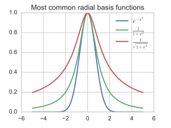

Interpolation of the magnetic field for drift correction
Interpolation of the magnetic field for drift correction
Interpolation du champ magnétique pour la correction de dérive
Simon Guillot
July 20, 2017
Sevenhugs

- To track its position and orientation in the room, the remote merges:
- Measurements from a set of embedded sensors: a gyroscope, an accelerometer, a magnetometer
- The distances to three beacons and its charging base
- During setup, the user places its real and virtual objects using the remote
Indoor usage of a magnetometer
Variations in color represent variations in inclination
- Important variations of the intensity and direction in the magnetic field
- The magnetometer must be recalibrated when exposed to strong fields
Estimation of the magnetic field
The model learns from a set of readings D^\star = \{ (x_i^\star, y_i^\star) | i \in [1..N] \} where
- y^\star \in \mathbb{R}^3 is the magnetometer reading transformed to be independent of the orientation of the device
- x^\star \in \mathbb{R}^3 its associated position
We are looking for an approximation B of the field such that \displaystyle
B(x^\star) \approx y^\star
Estimation of the magnetic field
Given a (new) position, the model is expected to predict the value of the magnetic field.
Difficulty: How to generalize well enough to be accurate in unexplored areas ?
A priori knowledge
Electromagnetic phenomena are governed by the four Maxwell’s equations, two involve the magnetic field.
\displaystyle
\nabla \cdot B = 0
The magnetic field is divergence-free: magnetic monopoles do not exist.
\displaystyle
\nabla \times B = \mu_0 \left(J + \epsilon_0 \frac{\partial E}{\partial t}\right)
Around a closed loop, it depends on the electric current.
We are assuming:
- no free current in the air
- no time-dependent effects due to moving charge
Ampere’s circuital law reduces to:
\displaystyle
\nabla \times B = 0
The magnetic field is irrotational.
The magnetic potential
An irrotational vector field can be represented as the gradient of a scalar field
\displaystyle
B(x) = -\nabla_x \psi(x)
Our goal is now to find a function \psi
- in \mathbb{R}^3 \mapsto \mathbb{R}
- differentiable w.r.t the position x
 A scalar field and its associated gradient
A scalar field and its associated gradient
Proposed model
The model is supported by a set of anchors points
Interpolation from a set of K anchor points M = \{(c_k, w_k) | k \in [1, K]\} where
- c_k is the position of the anchors in \mathbb{R}^3
- w_k its associated scalar value
Proposed model
The model is supported by a set of anchors points
We define \psi as
\displaystyle
\psi(x) = \sum_{k=1}^K w_k \phi(x, c_k)
where \phi gives a weight to the anchors depending on their distance.
Proposed model
\displaystyle
\begin{aligned}
B(x) &= \nabla_x \psi(x) \\\\
&= \sum_{k=1}^K w_k \nabla_x \phi(x, c_k)
\end{aligned}
We chose \phi to be a Gaussian: \displaystyle
\phi(x, c_k) = e^{-\frac{||x - c_k||^2}{2 \sigma^2}}
its gradient is
\displaystyle
\nabla_x \phi(x, c_k) = \frac{c_k - x}{\sigma^2}
e^{-\frac{||x - c_k||^2}{2 \sigma^2}}
\quad \in \mathbb{R}^3

Reducing to a linear optimization problem
If we do not fit the positions c_k of the anchors, B can then be written
\displaystyle
B = H \cdot w
where H is the 3 \times K matrix
\displaystyle
H =
\begin{bmatrix}
\nabla_x \phi(x, c_1) & \cdots & \nabla_x \phi(x, c_K)
\end{bmatrix}
and w the column vector
\displaystyle
w =
\begin{bmatrix}
w_1 \\
\vdots \\
w_K
\end{bmatrix}
Kalman filters
- Optimal for linear optimization problems involving Gaussian noises
- Estimate a state w with its associated covariance matrix P
Algorithm outline
- Predict
- Use a “transition model” to forward the estimated state in time
- Update
- Project the estimated state into the measurement space using an “observation model”
- Compare to the actual measurement
- Correct the estimation
Advantages
- Online estimation of the parameters, each measurement is observed only once
- Fine-grained uncertainty on the measurements and estimation
Estimation of the potential using a Kalman filter
For each measurement (x, y)
- Compute the H matrix for the current position x
- Compute the residual z between the true and estimated measurements, its associated covariance S and the Kalman gain K using
\displaystyle
\begin{aligned}
z &= y - H w \\
S &= R + H P H^\top \\
K &= P H^\top S^{-1} \\
\end{aligned}
- Update the state w and its covariance P with
\displaystyle
\begin{aligned}
w &\leftarrow w + K z \\
P &\leftarrow (I - K H) P
\end{aligned}
- S \in \mathcal{M}^{3\times3}, its inverse is easy to compute
- H grows linearly with the number of anchor points, P quadratically
Initial results
- Resolution and sigma of 25cm
- Addition of a bias – a linear function of the position when viewed as a potential
Initial results
- Resolution and sigma of 25cm
- Addition of a bias – a linear function of the position when viewed as a potential
Model confidence, using the anchors variance
Conclusion
Summary:
- Modelisation of a magnetic potential instead of the vector field
- Continuous interpolation over a set of chosen points
- Inclusion of a second law of Maxwell using a regularization
Novelty of the method:
- Usage of an attention mechanism with a grid of potentials
- Implemention in a Kalman filter
Non-linear version
Optimization by stochastic gradient descent
We are looking for the function \psi that minimizes the loss
\displaystyle
\mathcal{L} = \sum_{i=1}^N \delta(\nabla \psi(x_i^\star), y_i^\star)
where \delta \in (\mathbb{R}^3, \mathbb{R}^3) \mapsto \mathbb{R} is a measurement of the error.
Let \theta = (w_1, \cdots, w_K, c_1, \cdots, c_K)^\top, to minimize \mathcal{L}_\psi, update iteratively \theta using
\displaystyle
\theta \leftarrow \theta - \epsilon \nabla_\theta \delta(\nabla \psi(x^\star),
y^\star)
where
- \epsilon is a constant controling the learning rate
- (x^\star, y^\star) is an element of S^\star chosen at random
Constraint on the divergence
\displaystyle
\begin{aligned}
\nabla \cdot B(x) &= \nabla \cdot \nabla \psi(x) \\ \\
&= \sum_{k=1}^K w_k \nabla_x \cdot \nabla_x \phi(x, c_k)
\end{aligned}
which can be rewritten using the scalar Laplacian:
\displaystyle
\nabla \cdot B(x) = \sum_{k=1}^K w_k \Delta_x \phi(x, c_k)
- As a regularizer during a SGD, the loss becomes \displaystyle
\mathcal{L} = \sum_{i=1}^N \delta(\nabla \psi(x_i^\star), y_i^\star)
+ mean_j\left(\nabla \cdot B(x_j)\right)
- As an observation in the Kalman filter: the model is expected to produce a of zero for a number of random positions.